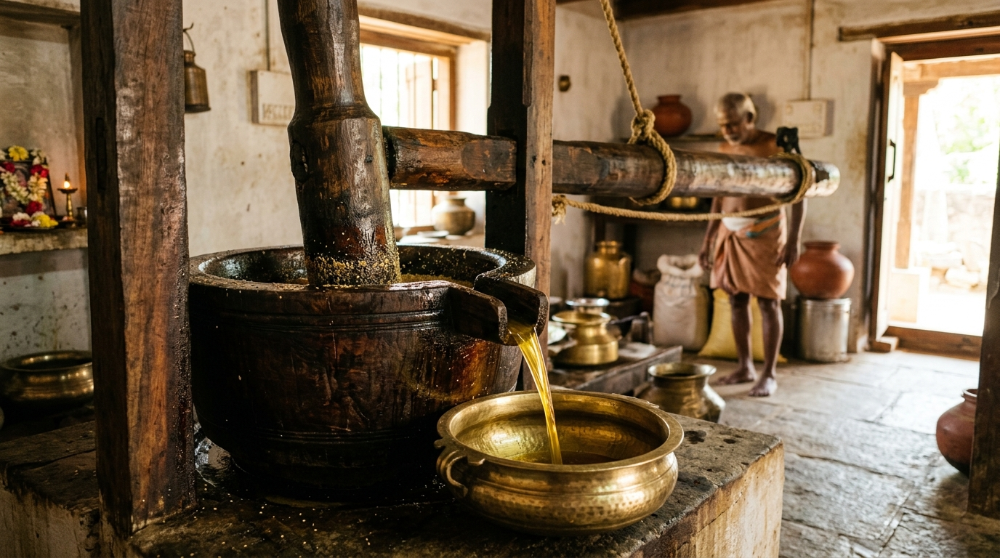

About Anudip Oil Mill
Generations of tradition, uncompromising quality, and cold-pressed purity in every drop.

Preserving Ancient Wisdom for Modern Wellness
At Anudip Oil Mill, our journey began with a simple yet profound realization: modern industrial refining strips cooking oils of their living essence, nutrients, and authentic flavor. We chose a different path—honoring ancient Tamil wood-press wisdom.
Using traditional Vaagai (Albizia lebbeck) wooden mortars, our slow-churn extraction keeps temperatures below 42°C. This gentle process retains naturally occurring Vitamin E, omega fatty acids, and original nutty aromatics in every golden drop.
Explore Our PrinciplesGuiding Principles
The core values driving every drop of cold-pressed oil we produce.
Pure Nutrition to Every Table
To deliver unadulterated, nutrient-dense cold-pressed oils directly from ethical farms to your family kitchen, promoting long-term health and authentic culinary taste.
Redefining Oil Processing Standards
To revive traditional cold-pressing methods across India, empowering local farming communities while setting the industry benchmark for transparency and purity.
Our Core Values
Every batch pressed at Anudip is governed by unyielding commitments to seed integrity, community stewardship, and customer wellness.
Quality
Hand-screened seeds with zero compromises. Only mature, thoroughly cleaned, and defect-free seeds enter our mill.
Purity
100% virgin cold extraction without chemicals, paraffin, artificial preservatives, or mineral oil dilution.
Trust
Complete batch traceability from farm to bottle, paired with an open-door policy for community mill inspection visits.
Sustainability
Zero-waste seed cake repurposed for nutrient-dense local cattle feed and distributed in recyclable food-grade tin canisters.